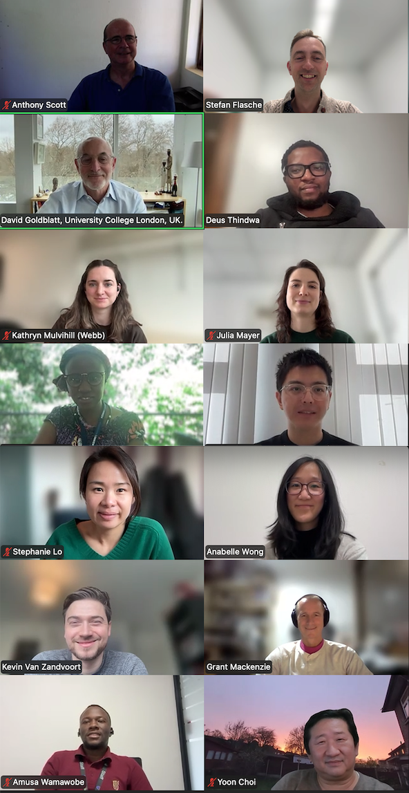

The Pneumococci & Pneumonia Interest Group
PING is an interdisciplinary online network connecting researchers working on pneumonia prevention and control from multiple angles.
Learn MoreAbout the Network
The network connects those with an interest in pneumococci and pneumonia and provides updates on recent and current research and other developments in the field. It is also designed to give early career researchers an opportunity to informally share their research, practice their presentation skills and get input from a range of experts
PING was established in 2019, with the aim of fostering collaboration and knowledge exchange among scientists working on pneumococci and pneumonia. The network is open to researchers from around the world who share an interest in these topics.
We meet online every other month to discuss recent research findings, share updates on ongoing projects, and explore new ideas. Our meetings feature presentations members of the network, with a preference for early career researchers.
Currently PING includes over 70 members mostly from Europe and the African continent including from Charité - Universitätsmedizin Berlin, the London School of Hygiene & Tropical Medicine, KEMRI Wellcome Trust, MRC The Gambia, UK Health Security Agency, Robert Koch Institute, Imperial College London, Wellcome Sanger Institute, National Institute for Communicable diseases in SA, Malawi-Liverpool Wellcome Trust and many more.

some of the March 2026 participants
Upcoming Meetings
Past Meetings
Contact
If you wish to join the network please contact the PING secretariat
To get an impression of the structure of the meetings check out our slide deck history